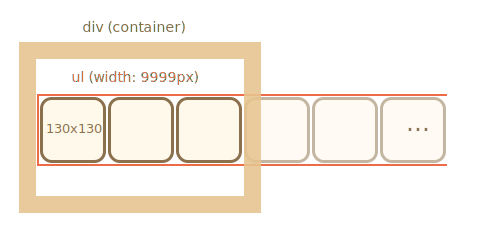
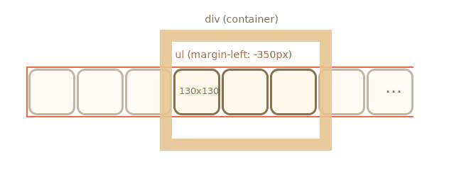

图像带可以表示为图像 <img> 的 ul/li 列表。
通常，这样的图像带是很宽的，但我们在其周围放置了一个固定大小的 <div> 来“剪切”它，因此，只有图像带的一部分是可见的：

为了使列表水平显示，我们需要为 <li> 应用正确的 CSS 属性，例如 display: inline-block。
对于 <img> 来说，我们应该调整 display，因为默认情况下它是 inline。在 inline 元素下方为 "letter tails" 保留了额外的空间，因此，我们可以使用 display:block 来将其删除。
我们可以移动 <ul> 来进行滚动。有很多方法可以实现这一点，例如，通过修改 margin-left 或者使用 transform: translateX()（性能更好）：

外部的 <div> 具有固定的宽度，因此，会裁剪掉“多余”的图像。
整个轮播图是页面上的一个独立的“图形组件”，因此我们最好将其包装到一个单独的 <div class="carousel"> 中，并在其中对其进行样式设置。